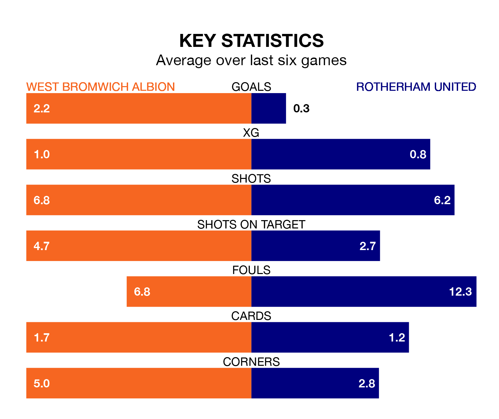

West Bromwich Albion are heavy favourites to keep all three points at home in Wednesday's late kick-off against Rotherham United.
The Baggies, who sit fifth in EFL Championship with 41 games played, are priced at 1.3 to seal victory at the Hawthorns.
Sitting 19 places and 46 points behind them in the table, Rotherham are 10.4 to win with *Betting Company*, while the draw is at 5.5.
In Alex Palmer, West Bromwich can rely on one of the league's safest pair of hands. He has kept 16 clean sheets in his 41 appearances this season, and only one other 'keeper – Leeds United's Illan Meslier – has been able to prevent the opposition scoring on more occasions in EFL Championship.
In Rotherham's net, Viktor Johansson has four clean sheets in 41 games. He has conceded a goal every 51 minutes, 90% more often than the 97 minutes between goals for Palmer.
With 32 goals in 41 games so far this season, United are the league's lowest scorers with 0.8 goals per game. And they are conceding more than average, letting in 82 goals at a rate of 2.0 per game.
Albion, meanwhile, are above average scorers, with 1.6 goals per game, compared to a league average of 1.3. They have conceded 1.0 goal per game.
The Baggies are in mixed form in EFL Championship, with two wins and four draws from their last six games.
With a win and a draw over that period, the Millers' form is much worse – they have taken four points from 18, compared to the home side's 10.
In the last five years, West Bromwich and Rotherham have played each other on four occasions. West Bromwich won three of them and Rotherham one.
On average, the Baggies scored 2.0 goals and the Millers 1.0 in those matches.
Their last meeting was on December 12, when West Bromwich won 2-0 away.
West Bromwich's last match was on Saturday, a 2-2 draw against Stoke City, with Jed Wallace and Michael Andrew Johnston getting the goals for the Baggies.
Rotherham lost 1-0 against Plymouth Argyle last time out, on Friday.
Wednesday's match will be refereed by Geoff Eltringham, who has taken charge of 16 EFL Championship games so far this season, issuing one red card and booking 64 players. He has awarded one penalty.
The last West Bromwich game Eltringham refereed was a 2-2 away draw with Queens Park Rangers on March 6. His last Rotherham match was their 3-0 loss away at Millwall on September 20.
Updated: 14:47 (UTC), 09/04/24